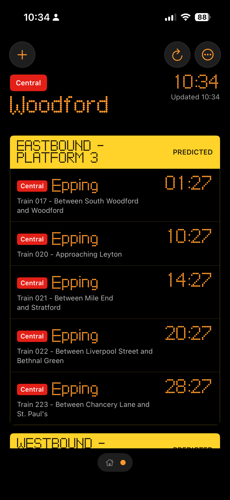
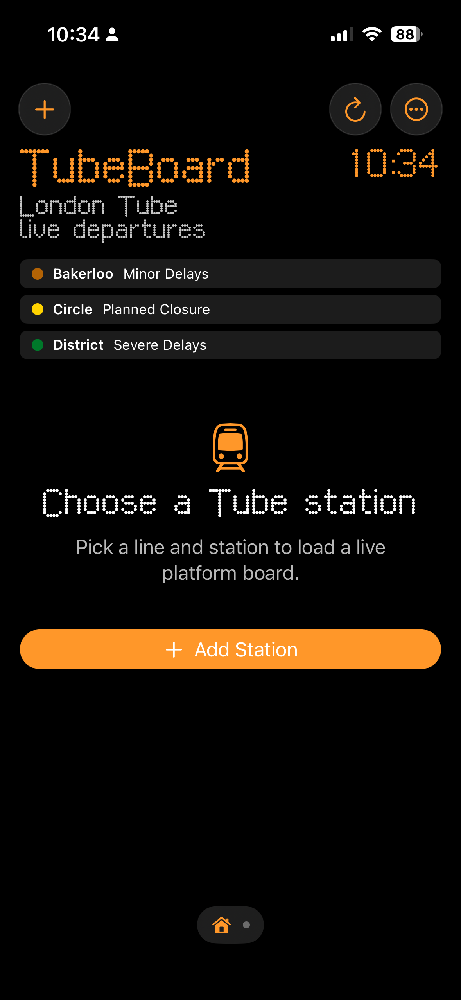
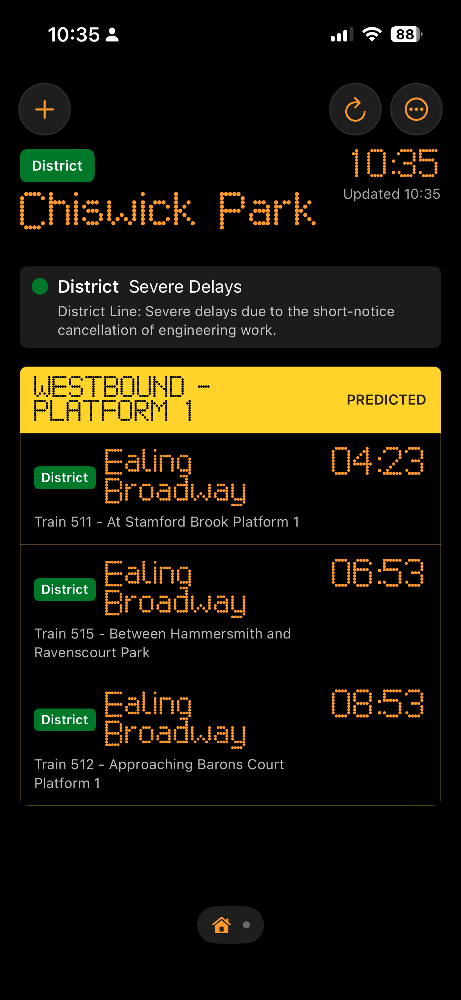

Live Tube arrivals
See the next trains for selected London Tube stations in a quick, glanceable board.
Live arrivals powered by TfL Open Data
TubeBoard is a fast live departure board for London Tube stations. Pick a station, see the next trains, and save favourites for quick checks.
Preparing for App Store / TestFlight release.

App screenshots
Live arrivals powered by TfL Open Data.


See the next trains for selected London Tube stations in a quick, glanceable board.
Keep regular stops close so everyday checks take only a moment.
Countdowns, destinations, and platforms stay focused on the next useful answer.
No. TubeBoard is an independent app and is not affiliated with or endorsed by Transport for London.
Yes. TubeBoard uses TfL Open Data for live arrivals where available.
Yes. Favourite stations are stored on your device for quick checks.